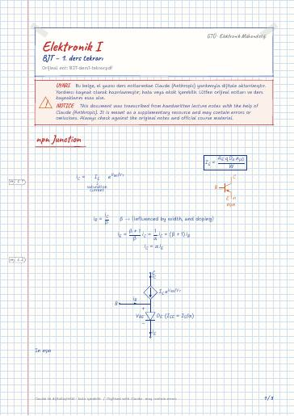
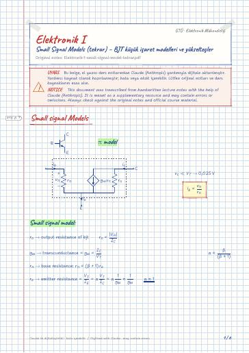
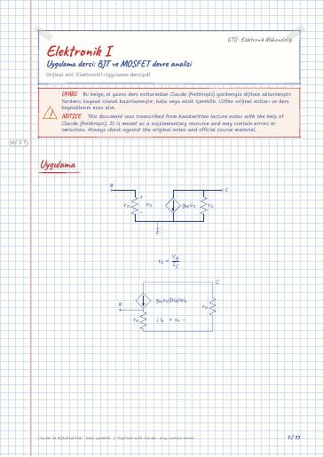
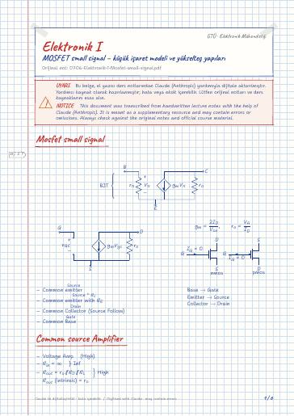
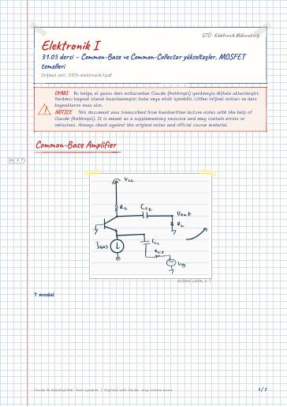
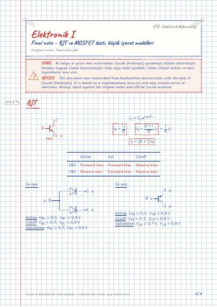

BJT – 1. ders tekrarı
npn Junction · Operation in Saturation Mode
Electronics I — lecture notes, past exams, and slides at Gebze Technical University (GTU) Electronics Engineering
Sinyaller ve kuvvetlendiriciler; BJT ve MOSFET kuvvetlendiriciler: DC kutuplama, küçük işaret modelleri, ortak emetör, ortak baz ve ortak kolektör katları.
Signals and amplifiers; BJT and MOSFET amplifiers: DC biasing, small-signal models, common-emitter, common-base and common-collector stages.
Bu sayfada: Ders Notları Dijital Notlar (LaTeX) Slaytlar Çıkmış Sorular Araştırma
El yazısı notların LaTeX ile yazılmış, aranabilir dijital versiyonları. Şablon ve derleme: latex-sablon.

npn Junction · Operation in Saturation Mode

Small signal Models · Small signal model · Practice · Amplifier Topologies · Common Emitter amplifier · Small signal equivalent circuit

Small signal Models · πpi model · Small signal model · T model · Amplifier Topologies · Common Emitter Amplifier

Uygulama · Soru 2 · Soru

Mosfet small signal · Common source Amplifier · Common Source with R_S · Common-Gate · Common-Drain Amplifier murekkep(Source follower)

Common-Base Amplifier · Common-Collector Amplifier kirmizikalem(Emitter-Follower) · Mosfet · 5.1.3 Creating a channel for current Flow · Applying a small v_DS · Operation as v_DS increased


BJT · Small signal Models · T model · Mosfet · NMOS · PMOS

Small signal circuit · Properties · Common Emitter Amp. with R_ERE · Common-Base Amplifier · Common-Collector Amplifier (Emitter-Follower)
Devre Teorisi II · Devre Teorisi II Laboratuvarı · Elektronik I Laboratuvarı · İşaretler ve Sistemler · Lojik Devreler ve Tasarım · Olasılık ve Rastgelelik · Türkçe II
GitHub'da klasörü aç← 4. Dönem
Ders materyallerinin hakları ilgili öğretim üyelerine ve GTÜ'ye aittir; eğitim amacıyla paylaşılmıştır.